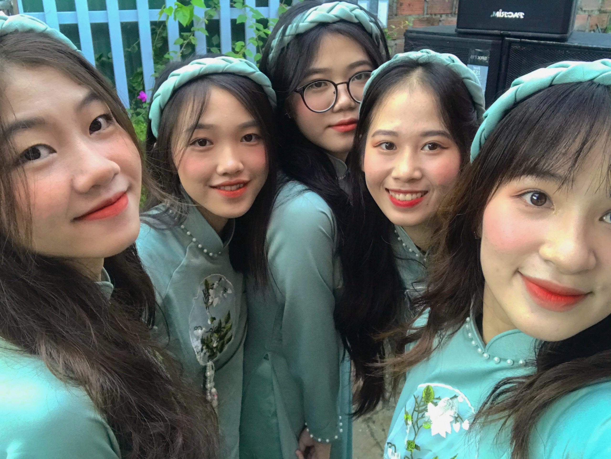

high school memory
Published on 26 January, 2020
High school is a tapestry woven with countless experiences, but the threads that shine the brightest are often the friendships we forge along the way. These relationships shape our journey, providing support, laughter, and companionship through the ups and downs of adolescence. Reflecting on my high school years, it’s the moments spent with friends that stand out as some of the most vivid and treasured memories. Here are a few snapshots of those unforgettable times.
The Cafeteria Chronicles: Where Friendships Flourished
Lunchtime in the school cafeteria was more than just a break from classes; it was a daily reunion with friends. Our table, nestled in the corner, became our sanctuary. It was a place where the worries of algebra or the stress of upcoming exams could be momentarily forgotten.
I remember the day our friend Jake attempted the infamous “Mega Burger Challenge.” Jake was always the one up for a laugh, and his appetite was legendary. The challenge? To stack as many burger patties as possible into one towering sandwich. We cheered him on, laughing uncontrollably as the burger grew taller and more precarious. The cafeteria staff watched in amusement, and by the time Jake took the first bite, it was more of a spectacle than a meal. He didn’t finish it, but the laughter and camaraderie we shared that day made it one of the best lunchtimes ever.
The Study Group Adventures: Learning with Laughter
Group study sessions were another highlight of high school life. Our makeshift study group often met at the local coffee shop, ostensibly to prepare for tests but more often than not to catch up and share stories.
One particular session stands out vividly. We were preparing for a particularly tough chemistry exam, and everyone was on edge. To lighten the mood, our friend Sara, who was the class clown, decided to break the tension with a spontaneous "Chemistry Jeopardy!" game. She mimicked the game show host's voice, complete with exaggerated gestures and dramatic pauses. What started as a serious study session turned into an evening filled with jokes, impromptu sketches, and a surprisingly effective review of the material. By the end of it, we had not only mastered our study material but also created a memory that we would talk about for years.
The Great Adventure: Our Unforgettable Road Trip
As our senior year was coming to a close, my group of friends and I decided to take a road trip—one last adventure before graduation. We planned a weekend getaway to a nearby state park, aiming for a few days of hiking, campfires, and stargazing.
The journey began early on a Friday morning, with our cars packed with camping gear, snacks, and an eclectic playlist that became our soundtrack. We sang along to our favorite songs, shared stories, and laughed until our sides hurt. One of the best moments was when we got lost trying to find a scenic lookout point. Instead of panicking, we embraced the detour, exploring back roads and discovering a hidden waterfall that became the highlight of our trip.
Setting up camp was an adventure in itself. We were not the most experienced campers, and pitching tents turned into a comedy of errors. But once everything was in place, we gathered around the campfire, roasting marshmallows and talking late into the night. Under the vast, starry sky, we shared our dreams, fears, and hopes for the future. It was a moment of connection and reflection that brought us even closer together.
student military training
Published on 12 January, 2021
Student military training is more than just an introduction to the principles of defense and strategy; it’s a journey that instills discipline, resilience, and a profound sense of camaraderie among young trainees. For many students, this training marks a pivotal chapter in their education, where they learn to push beyond their limits and develop skills that last a lifetime.
I vividly remember the first day of training. The early morning chill was sharp, and the uniform felt stiff and unfamiliar. As we stood in formation, the air was thick with a mix of nervous anticipation and eagerness. Our instructors, veterans with years of experience, were the embodiment of the values they aimed to impart: discipline, respect, and unwavering dedication.
The days were structured with precision, from the rigorous physical drills at dawn to the tactical lessons in the classroom. Each activity, whether it was mastering the intricacies of drill formations or learning survival techniques, demanded focus and effort. The physical challenges were intense, pushing us to our limits and then some. Running through obstacle courses, navigating through rough terrain, and enduring long marches under the weight of a heavy pack tested our endurance and determination.
But it wasn’t just about physical toughness. The training also emphasized mental fortitude and teamwork. We learned to trust and rely on one another, to communicate effectively, and to work as a cohesive unit under pressure. These lessons were often learned the hard way—through moments of failure and the collective effort to overcome them.
One particularly grueling exercise involved a night navigation course. In teams, we had to find our way through dense woods with only a map and compass. Fatigue and frustration set in as we stumbled through the darkness, but it was in these moments that our bonds as a team grew stronger. Encouraging each other, sharing the load, and keeping spirits high, we eventually found our way. The sense of accomplishment and unity we felt at the end of that night was profound.
Throughout the training, we also developed a deep respect for the military ethos and the sacrifices made by those in service. The stories shared by our instructors, the history lessons about valor and duty, and the solemn ceremonies honoring past heroes instilled in us a sense of honor and pride.
As the weeks progressed, the once unfamiliar routines became second nature. The uniform that had felt awkward on the first day now symbolized a journey of growth and achievement. By the end of the training, we stood taller, not just in physical stature, but with a newfound confidence and resilience.
Student military training is a transformative experience. It challenges young minds and bodies, teaches invaluable life skills, and forges friendships grounded in mutual respect and shared adversity. It’s a journey that prepares students not only for potential service but also for the many challenges they will face in life. And for those who undertake it, the lessons learned and the bonds formed become an enduring part of their character.
my close friend wedding
Published on 23 March, 2022

Weddings are magical moments that celebrate the union of two souls, and attending the wedding of a close friend is a unique joy. It's an occasion filled with happiness, laughter, and a few tears, as we witness a cherished friend embark on a new chapter of their life. Here’s a heartfelt reflection on my close friend’s wedding—a day that was as beautiful and unforgettable as our friendship.
The Excitement Leading Up to the Big Day
The journey to the wedding day was filled with anticipation and excitement. From the moment my friend announced their engagement, there was a whirlwind of activities and emotions. Planning the wedding, choosing the venue, picking out the perfect dress, and organizing the guest list were just the beginning. I was honored to be involved in this process, offering support and sharing in the joy.
The bridal shower was a highlight, bringing together friends and family in celebration. We laughed over old stories, played silly games, and showered the bride with love and good wishes. The bachelorette party, a lively affair full of dancing and merriment, was a night of pure fun and bonding. It was wonderful to see my friend so happy and surrounded by those who love her most.
The Rehearsal Dinner: A Prelude to the Main Event
The evening before the wedding, the rehearsal dinner set the tone for the festivities to come. Held at a cozy, intimate venue, it was a gathering of close family and friends. The atmosphere was filled with warmth and anticipation. As we practiced our roles for the ceremony, there was a sense of excitement and slight nervousness in the air.
The dinner that followed was a blend of heartfelt toasts and shared laughter. I had the privilege of delivering a toast, where I reminisced about our many adventures and expressed how happy I was to see my friend so deeply in love. It was a moment of reflection and gratitude for the friendship we had shared and the new journey my friend was about to begin.
The Wedding Day: A Beautiful Beginning
The morning of the wedding was a flurry of activity and excitement. As part of the bridal party, I joined my friend and the other bridesmaids early to get ready. The room buzzed with energy as hair was styled, makeup was applied, and dresses were carefully donned. Amidst the chaos, there were quiet moments of reflection and emotion. Seeing my friend in her wedding dress for the first time was a truly breathtaking moment. She looked radiant, a picture of joy and elegance.
As we arrived at the venue, a picturesque garden surrounded by blooming flowers, the reality of the day set in. The ceremony space was beautifully decorated with floral arrangements and soft, twinkling lights. Guests began to arrive, each one adding to the sense of celebration and love that filled the air.
The Ceremony: Vows of Forever
The ceremony was the heart of the day. As the music began and we walked down the aisle, there was a palpable sense of anticipation. When my friend appeared, escorted by her father, there was an audible gasp from the guests. She looked stunning, her face glowing with happiness.
Standing by her side as she exchanged vows with her partner was an emotional experience. Their words, filled with love and commitment, brought tears to many eyes, including mine. The officiant, a close family friend, spoke beautifully about love, partnership, and the journey they were embarking on together. The moment they were pronounced married was met with a cheer, and as they kissed, it felt like the whole world celebrated with them.
The Reception: A Night to Remember
Following the ceremony, the reception was a lively and joyous celebration. The venue, now illuminated with soft, romantic lighting, was a perfect setting for the evening ahead. The speeches were a highlight, each one capturing the essence of the couple’s love story and their impact on those around them.
The first dance, to a song that held special meaning for the couple, was a tender and intimate moment. Watching them move together, so in sync and so deeply in love, was a beautiful sight. As the night progressed, the dance floor filled with guests. We danced with abandon, celebrating love and life with every step.
The wedding cake, a masterpiece of design and flavor, was another highlight. The couple’s playful cake-cutting ceremony brought laughter and joy, and the taste of the cake itself was the perfect blend of sweetness and delight.
my close friend birthday
Published on 15 August, 2023
Birthdays are occasions for joy, laughter, and unforgettable memories, and celebrating the birthday of a close friend is always a special event. Recently, I had the pleasure of joining my friend for a birthday bash at a charming bistro in the heart of the city. Here’s a glimpse into the festivities and the wonderful time we shared.
Setting the Scene: A Cozy Bistro Ambiance
The bistro exuded warmth and charm from the moment we stepped inside. The soft glow of twinkling lights, the aroma of freshly brewed coffee, and the gentle hum of conversation created an inviting atmosphere. Nestled in a corner booth, surrounded by rustic decor and cozy seating, we knew we were in for a delightful evening.
The Guest of Honor Arrives: Cheers to Another Year!
As the guest of honor arrived, we erupted into cheers and applause. Seeing the look of surprise and happiness on my friend’s face was priceless. Dressed to impress and sporting a contagious smile, they were the epitome of birthday excitement.
A Culinary Adventure: Indulging in Delicious Delights
The highlight of any bistro experience is, of course, the food. And this bistro did not disappoint. From savory appetizers to delectable desserts, every dish was a masterpiece of flavor and presentation.
We started with a round of shared appetizers—crispy calamari, bruschetta bursting with ripe tomatoes, and artisanal cheese platters that delighted our taste buds. The conversation flowed effortlessly as we savored each bite, sharing stories and laughter.
For the main course, we indulged in a feast of culinary delights. From succulent steaks to delicate seafood dishes, there was something to please every palate. My friend’s eyes lit up as they took their first bite of the perfectly cooked filet mignon, a birthday treat fit for royalty.
And let’s not forget the drinks! The bistro’s extensive wine list and creative cocktails added a touch of sophistication to the evening. We toasted to my friend’s special day with glasses of bubbly champagne, raising our glasses in a heartfelt salute to another year of friendship and adventure.
Sweet Endings: Birthday Wishes and Decadent Desserts
No birthday celebration is complete without dessert, and the bistro’s sweet offerings were a fitting finale to the evening. We indulged in an array of decadent treats—rich chocolate lava cake, creamy tiramisu, and tangy lemon tarts that melted in our mouths.
As the candles flickered atop my friend’s birthday cake, we gathered around, singing “Happy Birthday” with gusto. The look of joy and gratitude on my friend’s face said it all. This was a moment to cherish, surrounded by friends and loved ones, basking in the warmth of shared memories and well wishes.
Memories to Last a Lifetime: Capturing the Moments
Throughout the evening, we captured countless memories on camera—silly selfies, heartfelt toasts, and candid snapshots of laughter and camaraderie. These photos will serve as treasured reminders of the love and friendship that filled the bistro that night.
A Birthday to Remember: Gratitude and Good Times
As the evening came to a close and we bid farewell to the bistro, I couldn’t help but feel a sense of gratitude for the time we shared. Celebrating my friend’s birthday in such a special setting was a reminder of the beauty of friendship and the joy of making memories together.
As we walked out into the crisp night air, hearts full and smiles bright, I knew that this birthday celebration would be etched in our memories for years to come. Here’s to my close friend, to another year of laughter and love, and to the countless adventures that lie ahead.
my birthday
Published on 21 April, 2024
As the clock strikes midnight, signaling the arrival of my birthday, I am greeted by the cheerful voices of my friends. Surrounded by laughter and excitement, we gather together to celebrate another trip around the sun. Each friend brings their own unique energy to the gathering, filling the room with warmth and joy.
There are hugs, high-fives, and heartfelt wishes exchanged as we toast to the memories we've shared and the adventures yet to come. With each passing moment, I am reminded of the incredible bond we share—a friendship that has weathered storms and celebrated triumphs together.
As we indulge in cake and laughter, I am grateful for the gift of friendship. These moments, surrounded by the people who lift me up and make my world brighter, are the true treasures of life. Here's to another year of friendship, love, and unforgettable memories. Cheers to us!